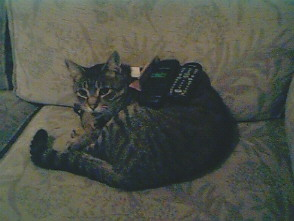

Real Time Interview with Rajaat
Interviewer: Gigabyte
�First question.. Do all VXers here walk around stoned all day and bang with their heads against
맓amp posts? <G>
Well, in order to feel at home during an Amsterdam VX meeting you will have to walk the left-hand
맗ath of stonedness. I think I'll manage to become Dutch quite well ;-)
�How old were you when you had your first experience with computers?
My first computer was an Aquarius, an ugly little fellow with blue rubber keys. I got it for my
막irthday when I was 7 years old.
�How old were you when you joined the VX scene?
I was just about your age when I conducted my first virus
만xperiments, just before I got 18 years old.
�How many viruses have you written by now.. any chance your totally drugged brain can still
�remember?
I cannot recall an actual number, but I think it must be around 200 or so, including minor
맜ariants.
�Do you consider yourself an 'evil' or rather 'nice' VXer?
I consider myself to be a 'nice' VXer, if you can speak of such a thing. Since we are evil in the
만yes of the end users, I frankly don't care if I appear to be friendly or not.
�Which language do you like most for writing viruses?
Hah, that's a good question. I would likr a language in which you have complete control over the
맊ode it generates, so highly configurable languages like C-- or
�Terse are good, but lack the things
맕eeded in a ring0 win32 environment. I yet have to look for a free language that comes with source
마nd generates tight code. Perl is interesting, though extremely bloated.
�Did you ever write anything destructive? If so, how do you feel about that now?
I have written one virus that did intentional damage, but after having goofed up with debug I
맋ecided for my own good to try to make them as harmless as possible.
�What is, in your opinion, the most idiotic comment about any of your viruses you've seen, from
ㅁVers?
I laughed a lot when I saw the description of Fick.7326 on the AVP site. I had expected that
�Kaspersky would be smart enough to recognize that major part of it is written in Borland C++,
말nstead of Pascal.
�Do your family and friends know you write viruses?
Yes, they don't care as long as I leave their machines alone.
�What am I doing here between these weirdos? (being the only normal person around)
I have no idea, perhaps masochism? ;-)
�Do you have enemies in the scene?
Not that I am aware of. There are people I like and there are people I don't like. These people
�I do not communicate with may want to consider themselves my enemy but that makes no difference
맚o me.
�What do you think about infected users?
I pity them. After so many media hypes (Michelangelo, Melissa, I love you..) people should have
맓earned the necessity of installing a good scanner from a trusted source.
�If a family member would catch one of your viruses and he/she had no AV installed at all, no
막ackups and he/she had caught it by running an e-mail attachment, despite all the warnings on the
�Internet and elsewhere, would you help him/her out?
Yes, and immediately install a cracked version of AVP. I'd tell them they are stupid if they don't
맒eep it updated. My hobby is writing them, not giving users a hard time. Unfortunately, a virus
말s made to be spread, thus I give them to people who are interested.
�What's your favourite VX website?
www.coderz.net, it is like a portal form, just like slashdot.
ㅁre you IRC addicted?
No, I don't think so.
�How long are you planning to stay in the scene? (Out, out!! ;)
I have no set plans whatsoever, but I feel like I have not tried
마ll the things I wish to accomplish.
�There is so much I yet would like to try out, but this mainly has to do with compilers and
말nterpreter issues.
�How big do you think my chances are to survive smoking a joint? (in %)
Hmm, about 50% at first, after 20 years of smoking weed I guess that gets trimmed down to 5% :-D
�But you'll get a try..
�Can I take a picture of the cat?
If he agrees you can try, but I had troubles myself keeping him in a pose for longer than 2 seconds.

�Which AVers do you hate most?
I don't hate them, though it is a pity they earn money on the digital havoc we wreak.
�Which of your viruses are you most proud of?
I think I'm proud of most of them. Each time I coded something I tried out new stuff, so each one
말s a milestone in my writing (or lack thereof) skills.
�Which other viruses do you like?
I for example like Babylonia for the ideas, win32.crypto for its
맚ricks with encryption. All
말nventive virus writers have my respect.
�How important is virus writing for you and does it have any influence on your life?
It has not such a great importance as it used to be for me, since my job consumes most time.
ㅁre you in any other underground scene, except for VX? (hacking, phreaking..)
No, those things don't have my interest.
�Do you have a real life?
Not very much, it is consumed by my work most of the time, though I might buy one if I got enough
맊ash.
�Which kind of movies and music do you like?
I like some movies like Braveheart, The Mummy, The Matrix, horror and comics. My music preference
말s hard rock.
�Do you have any other hobbies?
I don't have many hobbies though I like reading books and sometimes I even enjoy cooking, since I
맕ow have to (can't live on microwave food alone).
ㅁre you married or do you have a girlfriend?
No.
�Do you believe in God?
Yes, for I am my own God :-)
�What's your favourite country/city?
The place I would like to be my next holiday is Curacao.
ㅁre you getting bored yet?
No, hungry, where is the food in this pillage of papers?
�What's your favourite food?
Aargh! Now questions about food while I'm starving? I like pastas and chips of course.
�Do you like junk food?
By occasion, when I don't feel like cooking.
�Which channel do you prefer, #vir or #virus, and why?
#virus, by lack of knowledge what the other channel is for.
�What do you like most about the scene and writing viruses?
The broad scale of different people involved.
�Is there anything else you want to mention?
Not right now, I'll mail you when I come to think of something.
ㅁny greetings or hate messages?
Hate to McDonalds, for not grilling their burgers :-)
�Thanks for the interview :)
You're welcome, lets have dinner , Gigabyte :-)